전자산업기사 (2003-08-31 기출문제)
1과목: 전자회로
1. 그림과 같은 정류회로에서 다이오드 D1에 걸리는 최대 역전압(PIV)은? (단, 다이오드의 순 방향 저항은 무시하고, C1, C2 및 RL은 충분히 크다고 생각한다. 그리고 전원 변성기 2차측에는 Vmsinω t [V]를 인가한 것으로 한다.)
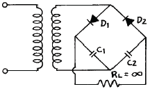
- Vm
- 2Vm
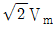
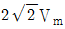
(정답률: 68%)

2. 반가산기 진리표에 대한 논리식은?
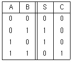
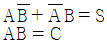
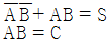
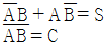
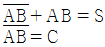
(정답률: 50%)
3. 부궤환 증폭회로의 특징으로 옳지 않은 것은?
- 이득이 증가한다.
- 잡음이 감소한다.
- 대역폭이 넓어진다.
- 주파수 특성이 좋아진다.
(정답률: 77%)
4. AM 검파회로에서 다음과 같이 입력신호가 입력되었을 때 출력 파형은?
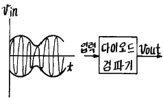
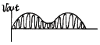
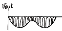
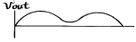
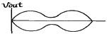
(정답률: 28%)
5. 조합 논리회로가 아닌 것은?
- 디코더
- 인코더
- 멀티플렉서
- 계수회로
(정답률: 70%)
6. 도면과 같은 회로에서 출력 전압 VO는?
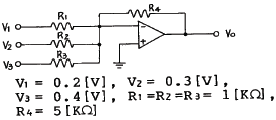
- 3.6V
- -3.6V
- 4.5V
- -4.5V
(정답률: 85%)
7. 다음 게이트(gate) 중 두 입력이 1과 0일 때 1의 출력이 나오지 않는 것은?
- OR
- NAND
- NOR
- Exclusive OR
(정답률: 71%)
8. 커패시터 필터의 리플 계수(Ripple factor)에 대한 설명중 옳지 않은 것은?
- 리플 계수는 필터의 효율을 나타낸다.
- 리플 계수가 낮으면 더 좋은 필터가 된다.
- 리플 계수는 커패시터의 값을 크게하면 커진다.
- 리플 계수는 첨두간 리플 전압을 직류 출력 전압으로 나눈 값이다.
(정답률: 47%)
9. 궤환 발진기에서 바크하우젠(Barkhausen)의 발진 조건을 표시한 것으로 옳은 것은?
- β A＞1
- β A＜1
- β A=2
- -β A=1
(정답률: 44%)
10. 비동기형 5진 계수회로를 만들려고 한다. 필요한 플립플롭의 수는?
- 2개
- 3개
- 4개
- 5개
(정답률: 60%)
11. RC 결합 증폭기에서 대역폭을 10배로 하려면 증폭이득은 몇 [dB] 감소시켜야 하는가?
- -1
- -10
- -20
- -40
(정답률: 67%)
12. 다이오드의 비선형 성질을 이용하여 특별한 전압을 필요로 하는 수준으로 그 진폭을 제한하는 회로는?
- 적분 회로
- 미분 회로
- 클램프(clamp) 회로
- 클리퍼(clipper) 회로
(정답률: 42%)
13. 진폭변조에서 변조 신호전압을 em = Emsinρt, 반송파 전압을 ec = Ecsinωt라고 할 때 피변조파 e를 표시하는 식은?
- e = (Eo+Em)sinωt
- e = (Eo+Em)sinρt
- e = (Eo+Emsinpt)sinωt
- e = (Eosinωt+Em)cosρt
(정답률: 36%)
14. 그림과 같은 회로에서 출력 전압 Vo 는?
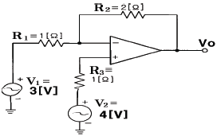
- 3 [V]
- 4 [V]
- 5 [V]
- 6 [V]
(정답률: 73%)
15. PN 접합 다이오드에서 정공과 전자가 서로 반대쪽으로 흘러 나가는 것을 방해하는 것은 접합부에 무엇이 있기 때문인가?
- 페르미 준위
- 전자궤도
- 에너지 준위
- 전위장벽
(정답률: 77%)
16. 증폭기의 구성 중 C급 증폭기의 장점으로 옳은 것은?
- 잡음의 감소
- 효율의 증대
- 회로 구성이 간단하다.
- 출력 파형의 일그러짐 감소
(정답률: 63%)
17. Karnaugh도로 된 함수를 최소화 하면?
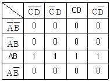
- AB
- BC
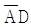
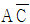
(정답률: 71%)
18. 수정 발진기는 수정 진동자의 리액턴스 주파수 특성이 어떻게 될 때 안정한 발진을 지속하는가?
- 용량성
- 유도성
- 저항성
- 임피던스성
(정답률: 61%)
19. 하틀레이(Hartley) 발진기에서 궤환(feedback) 요소는?
- 저항
- 용량
- 코일
- 진공관
(정답률: 66%)
20. 트랜지스터가 스위치로 사용할 때 쓰이는 두 개의 영역은?
- 포화영역과 활성영역
- 활성영역과 차단영역
- 포화영역과 차단영역
- 활성영역과 역활성영역
(정답률: 55%)
2과목: 전기자기학 및 회로이론
21. 실효값은 최대값의 몇 %인가?
- 141.2
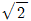
- 70.7
- 50
(정답률: 73%)
22. 50[㎌]의 콘덴서에 100[V], 60[Hz]의 교류 전압을 가할 때의 무효 전력은?
- 40π [var]
- 60π [var]
- 120π [var]
- 240[var]
(정답률: 74%)
23. 페이저가 E = 3-j4인 복소수를 정현파의 순시치로 나타내면 어떻게 되는가?
- 5sin(ωt - 36.9°)
- 5sin(ωt - 53.1°)
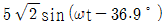
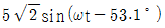
(정답률: 72%)
24. 유전체에 가한 전계 E [V/m]와 분극의 세기 P [C/m2]과의 관계로 옳은 것은?
- P = εo(εs + 1)E
- P = εo(εs - 1)E
- P = εs(εo + 1)E
- P = εs(εo - 1)E
(정답률: 84%)
25. 그림과 같은 R-L 직렬회로의 정상 전류[A]는?
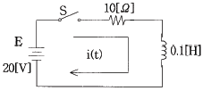
- 0.5
- 1
- 1.5
- 2
(정답률: 52%)
26. 20℃에서 저항 온도계수 α20 = 0.004인 저항선의 저항이 100Ω이다.이 저항선의 온도가 80℃로 상승될 때 저항은 몇 Ω이 되겠는가?
- 24
- 48
- 72
- 124
(정답률: 20%)
27. 그림과 같이 접지된 반지름 a[m]의 도체구 중심 0 에서 d[m] 떨어진 점 A에 Q[C]의 점전하가 존재할 때 A′ 점에 Q′ 의 영상전하(image charge)를 생각하면, 구도체와 점전하간에 작용하는 힘은 몇 N 인가?
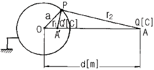
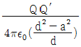
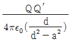
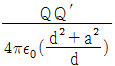
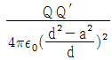
(정답률: 67%)
28. 두 평행 왕복도선사이의 도선 외부의 자기인덕턴스는 몇 H/m 인가?(단, r은 도선의 반지름, D는 두 왕복 도선사이의 거리이다.)
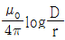
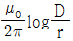
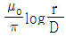
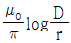
(정답률: 26%)
29. 다음 각 필터 중 정 K형 저역(低域)필터 회로는?
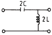
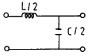
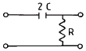
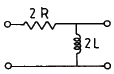
(정답률: 66%)
30. 권수 n, 가로 a[m], 세로 b[m]인 구형코일이 자속밀도 B[Wb/m2]되는 평등자계내에서 각속도 ω[rad/s]로 회전할 때 발생하는 유기기전력의 최대치는?
- ωnB
- ωabB2
- ωnabB
- ωnabB2
(정답률: 20%)
31. sinω t의 라플라스 변환은?
- S/S2+ω2
- S/S2-ω2
- ω/S2+ω2
- ω/S2-ω2
(정답률: 52%)
32. 부하의 전압 반사계수가 0.5일 때 입력 전력의 몇 [%]가 부하에 공급되는가?
- 0
- 25
- 50
- 75
(정답률: 21%)
33. 5㎒의 공진 주파수를 갖는 공진회로에서 Q가 200일 때 대역폭은?
- 1000㎒
- 5㎒
- 25㎒
- 25㎑
(정답률: 45%)
34. 그림과 같이 무한장 직선도선 ℓ 이 z축상에 있으며, 이것에 z의 + 방향으로 전류 i1이 흐르고 있다. 그리고 y-z면상에 직사각형 도선 ABCD가 있고 이것에 ABCD 방향으로 전류 i2 가 흐르고 있을 때 z의 +방향으로 힘이 발생하는 변은?
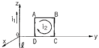
- AB변
- BC변
- CD변
- DA변
(정답률: 46%)
35. 진공 중에 미소 선전류소 Ｉㆍdℓ [A/m]에 기인된 r [m] 떨어진 점의 임의의 점의 자계의 세기는 몇 A/m 인가?
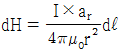
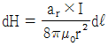
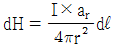
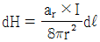
(정답률: 32%)
36. 서로 다른 두 유전체사이의 경계면에 전하분포가 없을 때 경계면 양쪽에서의 상태로 옳은 것은?
- 전계의 접선성분 및 전속밀도의 접선성분은 서로 같다.
- 전계의 접선성분 및 전속밀도의 법선성분은 서로 같다.
- 전계의 법선성분 및 전속밀도의 접선성분은 서로 같다.
- 전계의 법선성분 및 전속밀도의 법선성분은 서로 같다.
(정답률: 63%)
37. 축이 무한히 길고, 반지름이 a[m]인 원주내에 전하가 축대칭이며, 축방향으로 균일하게 분포되어 있을 경우, 반지름 r(＞a)[m]되는 동심 원통면상 외부의 일점 P의 전계의 세기는 몇 V/m 인가?(단, 원주의 단위 길이당의 전하를 λ[C/m]라 한다.)
- λ/εo
- λ/2πεo
- λ/πa
- λ/2πεor
(정답률: 41%)
38. 그림과 같은 회로에서 t = 0 일 때 스위치 K를 닫았다. 시간 t = ∞일 때의 전류 i(∞) 값은 몇 [A]인가?
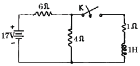
- 2.5
- 1.7
- 1.545
- 1
(정답률: 40%)
39. R-C 직렬 회로에 직류 전압을 가할 때 시정수(τ)를 표시하는 것은?
- C/R
- CR
- 1/CR
- R/C
(정답률: 86%)
40. 길이 ℓ [m], 한변이 a[m]인 정방형 단면을 가진 자성체가 길이 방향으로 균일하게 자화되어 자화의 세기가 Pm[T]일 때 자성체 양단의 전자극의 세기는 몇 Wb 인가?
- a2Pm
- Pm/a2
- Pm
- πa2Pm
(정답률: 37%)
3과목: 전자계산기일반
41. 7Kword memory의 실제 word 수는?
- 1024
- 4096
- 7168
- 8192
(정답률: 56%)
42. 어떤 컴퓨터의 기억장치 용량이 4096 워드이다.각 워드가 16비트라고 하면 MAR과 MBR의 각 비트수는?
- MAR : 12, MBR : 5
- MAR : 12, MBR : 16
- MAR : 32, MBR : 24
- MAR : 5, MBR : 12
(정답률: 62%)
43. 특정의 비트 또는 문자를 삭제하기 위해 가장 필요한 연산은?
- AND
- OR
- MOVE
- Complement
(정답률: 90%)
44. DMA(Direct Memory Access)에 관한 설명으로 옳지 않은 것은?
- 온-라인(on-line) 시스템이 여기에 속한다.
- 입ㆍ출력 속도의 향상을 목적으로 사용된다.
- 외부 장치와 메모리 사이에 직접 데이터가 전송된다.
- DMA가 실행될 동안 마이크로프로세서의 메모리 버스는 고 임피던스 상태가 된다.
(정답률: 48%)
45. CPU와 기억장치 및 주변장치 사이의 정보 전송을 위한 통로(Bus)가 아닌 것은?
- 주소 버스(Address Bus)
- 데이터 버스(Data Bus)
- 제어 버스(Control Bus)
- 신호 버스(Signal Bus)
(정답률: 55%)
46. 반가산기 합과 반감산기 차를 얻기 위해 필요한 회로는?
- 반일치 논리
- 일치 논리
- OR 논리
- AND 논리
(정답률: 48%)
47. 입ㆍ출력을 수행하는 각 장치의 기능에 대한 설명 중 옳지 않은 것은?
- I/O 제어는 프로그램 메모리로부터 명령을 받아 인터페이스를 통하여 주변장치와 대화한다.
- 인터페이스 논리는 I/O 버스로부터 받은 명령을 해석하고 주변장치 제어기에 신호를 보낸다.
- 각 주변장치는 특정한 전기 기계적 장치를 동작시키고, 제어하는 자신의 제어기를 갖고 있다.
- I/O 버스는 데이터의 흐름을 동기화하고 주변장치와 컴퓨터 사이의 전달 속도를 관리한다.
(정답률: 44%)
48. 10진수 26을 2진수로 변환하면?
- 11011
- 11010
- 11001
- 11000
(정답률: 76%)
49. 프로그램들을 메모리 안에 넣어서 실행을 준비시키는 시스템 프로그램을 무엇이라 하는가?
- linkage editor
- interpreter
- loader
- compiler
(정답률: 42%)
50. 마이크로 동작 중 바이너리(binary) 연산자와 관계있는 것은?
- 컴플리먼트
- 산술연산
- 논리시프트
- 로테이트
(정답률: 61%)
51. 어떤 인스트럭션이 수행되기 위하여 가장 먼저 행해야 하는 마이크로 오퍼레이션은?
- IR → MAR
- PC → MAR
- PC → MBR
- PC+1 → PC
(정답률: 87%)
52. 다음 순서도 기호의 명칭은?
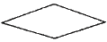
- 처리
- 준비
- 단말기
- 비교, 판단
(정답률: 74%)
53. 인터럽트(Interrupt)우선 순위 부여 방식으로 우선순위에 따라 장치들을 직렬로 연결하며, 우선순위의 변경은 어렵고, 비경제적이지만 인터럽트 반응 속도가 빠른 방식은?
- 플래그(Flag)
- 폴링(Polling)
- 데이지 체인(Daisy Chain)
- 장치 코드 버스(Device Code Bus)
(정답률: 81%)
54. 기억장치에 기억된 명령(instruction)이 실행되는 순서대로 중앙처리장치에서 실행될 수 있도록 주소를 지정해 주는 레지스터는?
- 어큐뮬레이터(accumulator)
- 스택 포인터(stack pointer)
- 프로그램 카운터(program counter)
- 명령 레지스터(instruction register)
(정답률: 75%)
55. 다음 인스트럭션의 형태에서 전달 기능을 갖는 연산자는?
- ADD
- LDA
- JMP
- OUT
(정답률: 34%)
56. 순서도를 사용할 때의 특징이 아닌 것은?
- 프로그램 코딩의 직접적인 자료가 된다.
- 프로그램의 정확성 여부를 판단하는 자료가 된다.
- 프로그램을 다른 사람에게 인수 인계하기가 어렵다.
- 프로그램의 내용과 일 처리 순서를 한눈에 파악할 수 있다.
(정답률: 80%)
57. 스택(Stack)에서 데이터의 입ㆍ출력 처리 방법은?
- 선입선출법(FIFO)
- 후입선출법(LIFO)
- 큐(Queue)
- 디큐(Deque)
(정답률: 56%)
58. 병원이나 학교, 기업체 등의 구내에서 컴퓨터와 각종 사무기기를 연결하여 업무에 효율적으로 사용하기 위한 정보 통신망을 무엇이라 하는가?
- VAN
- LAN
- ISDN
- WAN
(정답률: 69%)
59. 디코더(decoder)의 출력이 3개 일 때 입력은 보통 몇 개인가?
- 1 개
- 2 개
- 8 개
- 16 개
(정답률: 61%)
60. 스택 포인터(SP:Stack Pointer)는 항상 스택의 어느 곳을 가리키는가?
- TOP
- POP
- PUSH
- BOTTOM
(정답률: 80%)
4과목: 전자계측
61. 디지털 주파수계에서 카운터 부분의 회로는 어떤 회로로 구성되어 있는가?
- 리미터 회로
- 클램핑 회로
- 모노멀티 회로
- 플립플롭 회로
(정답률: 74%)
62. 계수형 주파수계는 피측정 주파수를 측정한 결과 1분 동안에 1800회 이었다. 피측정 주파수는?
- 20[㎐]
- 30[㎐]
- 40[㎐]
- 50[㎐]
(정답률: 81%)
63. 측정값을 M, 참값을 T라 하면 오차 ε 는?
- ε = M-T
- ε = T-M
- ε = T/M
- ε = M/T
(정답률: 68%)
64. 단상 교류 전력을 측정하기 위한 방법이 아닌 것은?
- 3 전류계법
- 3 전압계법
- 단상 전력계법
- 3 전력계법
(정답률: 75%)
65. 펄스 전압을 측정하는데 가장 적당한 계기는?
- 전압계
- 전위차계
- 진공관 전압계
- 오실로스코프
(정답률: 62%)
66. 오실로스코프(Oscilloscope)에서 톱니파를 관측파에 동기시켜야 하는 것은?
- 휘점을 수평 진동하려고
- 파형을 안정하기 위하여
- 파형을 정지시키기 위하여
- 휘도의 초점을 맞추기 위하여
(정답률: 75%)
67. 직류 전류계의 지시 회로가 그림과 같을 때 A2의 내부저항 값은?
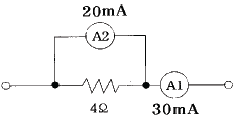
- 4[Ω]
- 3[Ω]
- 2[Ω]
- 1[Ω]
(정답률: 57%)
68. 다음 브리지에서 평형되게 조정 하였을 경우 Lx의 값은?
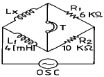
- 2.4[mH]
- 6.7[mH]
- 67[mH]
- 24[mH]
(정답률: 60%)
69. 교류 계기로 동작하지 않는 계기는?
- 열전대형
- 가동 코일형
- 가동 철편형
- 전류력계형
(정답률: 60%)
70. 신호의 에너지와 전압을 주파수의 함수로 정보를 제공하는 실시간 분석기는?
- 스펙트럼 분석기
- 스위프 신호발생기
- 고조파 왜율 분석기
- 디지털 스토리지 스코프
(정답률: 76%)
71. 참값이 100[A]인 전류를 측정하였더니 110[A]의 전류가 측정되었다. 이 경우 보정률은 약 얼마인가?
- -0.01
- -0.04
- -0.06
- -0.09
(정답률: 71%)
72. 최대눈금 250[V]인 0.5급 전압계로 전압을 측정하였더니 지시가 100[V]였다고 한다. 상대 오차는?
- 1[%]
- 1.25[%]
- 2[%]
- 2.25[%]
(정답률: 73%)
73. 교류 100Vrms 전압을 오실로스코프로 측정했을 때 이 교류의 peak to peak 전압은 약 몇 [V]인가?
- 100
- 141
- 200
- 282
(정답률: 58%)
74. 디지털(Digital) 전압계의 원리에 해당되는 것은?
- 비교기
- 미분기
- D-A 변환기
- A-D 변환기
(정답률: 85%)
75. 비트(beat) 발진기의 계통도에서 고정 발진기의 주파수를 100kHz로 선정한다면 빈칸의 회로는?
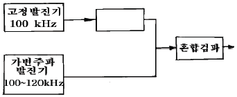
- 저주파 발진기
- 신호 감쇠기
- 저역 여파기
- 고역 여파기
(정답률: 50%)
76. 오실로스코프(oscilloscope)로 측정할 수 없는 것은?
- 전압 측정
- 변조도 측정
- 임피던스 측정
- 시간간격, pulse의 입상 시간(rise time) 측정
(정답률: 57%)
77. 셰링브리지(Schering Bridge)는 어떤 측정에 사용되는가?
- 동손
- 유도 리액턴스
- 철심의 관전류
- 정전용량과 손실각
(정답률: 78%)
78. 가동철편형 계기의 특징이 아닌 것은?
- 구조가 간단하고, 견고하다.
- 외부자계의 영향을 받기 쉽다.
- 큰 전류를 직접 측정할 수 있다.
- 오차가 없고, 감도가 낮은 것은 제작이 곤란하다.
(정답률: 64%)
79. 디지털 주파수계의 전체 블록도 중에서 시미트 트리거(schmitt trigger) 회로의 기능은?
- 구형파를 정현파로 변화
- 구형파를 삼각파로 변화
- 정현파를 구형파로 변화
- 구형파를 펄스파로 변화
(정답률: 76%)
80. 열전대형 전류계에서 발생되는 오차가 아닌 것은?
- 공진 오차
- 배분 오차
- 차폐 오차
- 표피 오차
(정답률: 61%)